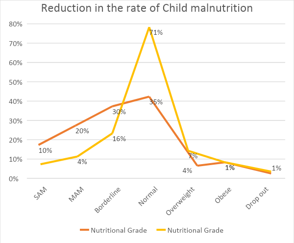
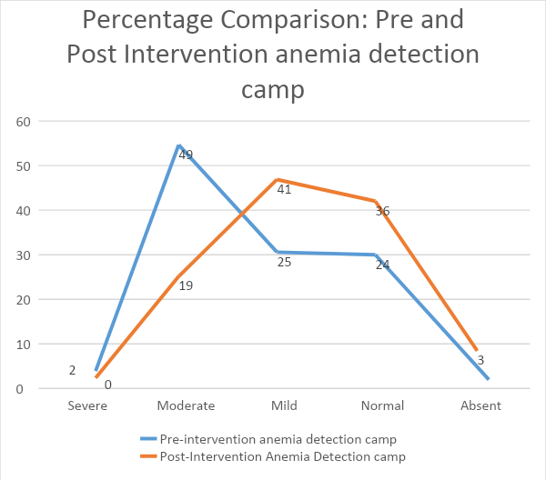

Niramaya
Health Foundation
Menu
About
About Niramaya
Our Board
Team
Support Us
What We Do
Our Programs
Our Impact
Our Reach
Events
Contact
Donate
Our Impact
Home
Our Impact
Annual Impact of Year 2021-22
13319 children were supported through Child Health and Nutrition Programs.
82% recovery achieved among identified malnourished children. (Free from Malnutrition).
100% Child immunization achieved as per Government of India’s Child Immunization Schedule.
50 children got enrolled under ICDS scheme.
575 pregnant women and 1160 lactating mothers were supported through antenatal and post natal care.
60 high risk pregnancies were detected and managed to avoid complications.
100% ANC registration and Institutional deliveries achieved.
99.9% pregnant women completed two doses of TT Immunization and consumed Iron-Folic Acid Supplements for more than 100 days.
180 pregnant women benefitted through PradhanMantri Matritva Vandana Yojana and Janani Suraksha Yojana.
107 pregnant women enrolled under ICDS scheme.
65% lactating mothers accepted Post-partum Family Planning.
217 lactating mothers enrolled under ICDS scheme.
6347 adolescent boys and girls were supported under Adolescent health and nutrition program.
2111 adolescent girls were screened for Iron Deficiency Anemia.
100% improvement achieved in severe anemic adolescent girls.
3399 adolescent girls were supported under menstrual health and hygiene management program.
5639 adolescent boys and girls covered though Life skills Education program.
13853 women were supported through various women health programs.
3063 women received gynecological services.
2741 women were screened for cervical and breast cancer.
3311 couples accepted Family Planning methods.
1,10,000 community people were educated through awareness sessions and Community events.
7139 Community people received clinical/curative services.
226 Niramaya Peers and 682 Government and non-government stakeholders were sensitized and involved in project activities.
COVID Relief:.
200 COVID positive patients were supported with Dry ration and hygiene kits.
1860 parents of malnourished children supported with 2 doses of COVID 19 vaccination.

